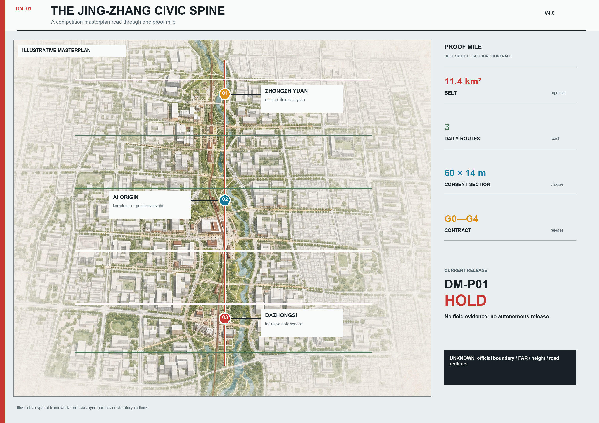
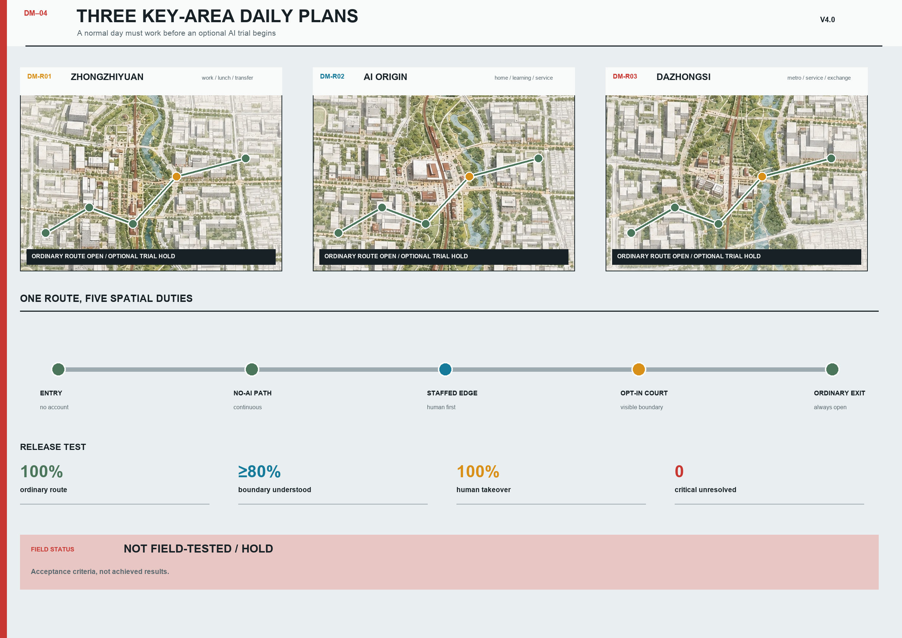
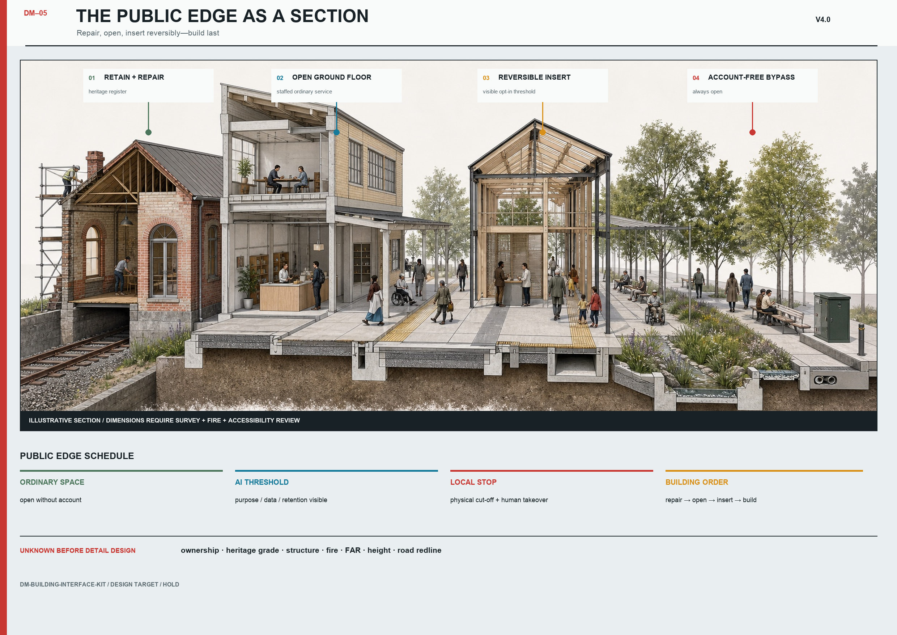

DOUBLE MEMORY JINGZHANG — The City Remembers Shared History; Intelligence Respects Personal Boundaries
A human-directed AI urban corridor where public memory accumulates, personal data can expire, and the benefits of innovation are shared.
DOUBLE MEMORY JINGZHANG
v4.0 thesis: Urban design must survive both spatial reading and evidence review. A fine-grained urban fabric, Jing-Zhang civic spine, six cross-stitches, three key-area daily plans, and one continuous public-edge section now carry the Proof Mile from belt to route, consent section, and implementation contract. Statutory controls remain
unknown; field results remainnot_field_tested / HOLD.
| Review dimension | Material v4.0 advance | Verification entry |
|---|---|---|
| Alignment and originality | The Proof Mile connects the public-memory spine, daily routes, passports, and implementation gates into one legible method | proof-mile-spatial-atlas.json |
| AI-planning innovation | AI becomes a civic service constrained by D0–D4 data classes, deletion receipts, physical stops, and independent review | forgetfulness-budget.json; offline audit |
| Feasibility | Building edges follow “retain—light retrofit—reversible insert—new build only after statutory controls,” linked to 0–180-day gates | building-interface-kit.json; implementation-contract.json |
| Public interest | Each key area has an account-free daily route with an ordinary equivalent, tested separately by six personas | key-area-daily-routes.json |
| Risk and expression | The atlas and control ledger separate known facts, design targets, unknown controls, and HOLD decisions | boards 01 and 03–05; spatial audit |

Design Basis and Source List
Double Memory begins with one clear distinction: a city should preserve shared history, but it should not preserve every trace of an individual’s daily life. The project links three transitions in autonomous capacity—independent railway engineering, Zhongguancun’s conversion of knowledge into public value, and the right of people to make the final decision over urban AI. Four civic rights become spatial and operational interfaces: the rights to know, choose, stop and appeal, and share benefits. Source Source Depth
The proposal is generated from the official announcement, the agent taskbook, the repository site package, and the local professional standards library. The overall area and three key areas currently use provisional repository polygons. They support concept generation, visual explanation, and machine review only; they are not official redlines, statutory controls, or parcel-level renewal decisions. Once official polygons are available, all nine GeoJSON layers, metrics, drawings, and HTML outputs must be recalculated together. Source Source Source Spatial data

Sources are separated by role. Official notices and policies support task, direction, and compliance claims. Repository processed files are navigation aids rather than new authorities. Historic, demographic, community, and international cases support human, operational, and governance design but do not become statutory spatial controls. Source Source Source


The three images provide visual evidence for engineering history, daily railway life, and adaptive reuse. Authors, licences, original pages, and modification notes are registered in the source and copyright files. Source Source Source
Three-Level Scope Framework
The coordinated research area asks how industry and public value reinforce each other. The overall design area asks how an approximately nine-kilometre corridor connects north to south and stitches east to west. The three key areas test how institutional prototypes enter public space, building renewal, walking systems, and daily operation. The levels are transmitted through one memory spine, three human-directed stations, two collaborative wings, and three consent gradients. Standard Depth

| Level | Question | Double Memory response | Evidence |
|---|---|---|---|
| Coordinated research | How does a world-class AI ecosystem serve public value? | Knowledge, translation, public testing, and rule export form a loop | compliance_matrix.json |
| Overall design | How do industry, life, heritage, and park become one city? | A public-memory spine links campuses, parks, streets, and communities | Spatial data |
| Key areas | How can tests remain visible, reversible, and reviewable? | Three human-directed urban laboratories | Spatial data |

The submitted provisional overall polygon measures 11,412,825.386 square metres. This number describes submitted geometry only and is not an approved area. Metric The number of provisional key areas is three; their exact location and form await official confirmation. Metric
Coordinated Research Area: Industry and Future City Research
Three transitions in autonomous capacity
The Jing-Zhang Railway embodied independent engineering in 1909. Zhongguancun later developed an ecosystem that moved knowledge into production and society. The next form of urban autonomy is people’s ability to understand, authorise, interrupt, and review AI action. Progress is measured not by device count or screen density, but by solved public problems, reversible systems, traceable responsibility, and shared benefit. Source Source
A five-part innovation chain
Universities produce verifiable knowledge; open-source communities build shared assets; enterprises convert them into products; neighbourhoods and public spaces host controlled trials; professional services and public review complete the feedback loop.
- The Zhongguancun technology-services wing provides legal, IP, safety, open-source, finance, and standards capacity.
- The Xiaoyue River daily-life wing originates questions in care, childhood, accessibility, ecology, commuting, and night safety.
- Every project requires a real need, an accountable operator, a test space, and an exit mechanism.
The future city is a permeable innovation district where campuses, parks, streets, and communities share accessible ground floors. Public forecourts, borderless greenery, walking connections, and offline services are innovation infrastructure. Source Standard Depth
Overall Design Area: Urban Renewal and Regulatory-Plan-Level Urban Design
The structure combines a public-memory spine, three laboratories, two collaborative wings, and three consent zones. AI research, business services, community services, and open space cover the submitted provisional boundary as a conceptual allocation method, not a statutory land-use change. Spatial data Depth
Renewal uses four actions: retain railway heritage, stable communities, and useful buildings; renovate closed ground floors, idle industrial space, and low-efficiency offices for public learning and enterprise services; consider demolition only after ownership, structure, safety, heritage, and resident review; and use new construction primarily to fill accessibility, care, youth housing, sanitation, edge-compute, and energy gaps.
The building layer contains 310,807.184 square metres of conceptual renewal footprints and is not an approval-level retain-renovate-demolish decision. Spatial data Metric FAR, height, road redlines, setbacks, and municipal capacity remain unknown pending official controls and engineering data. Depth
Three consent gradients
| Level | Spatial prototype | Data rule | User right |
|---|---|---|---|
| White: no-AI commons | Paths, seating, water, toilets, ordinary signs | No face or individual trajectory recognition | Use without registration |
| Blue: anonymous assistance | Crowd guidance, environment, accessibility prompts | Edge processing, aggregation, shortest retention | Visible notice and non-AI alternative |
| Amber: controlled test | Robots, autonomous mobility, interactive models | Explicit consent, purpose limitation, audit log | Exit, stop, human supervision |
One legible field language unifies the gradients: white dots mean free passage, blue pulses mean anonymous assistance, and amber frames mean an active trial. Green, yellow, and red states mean normal, restricted, and stopped.

v2.0 turns the abstract gradient into a 60 m × 14 m prototype envelope that can be recalibrated on site: a 4.0 m continuous no-AI walk, 2.5 m anonymous-assist strip, 5.0 m controlled test court, and 2.5 m planted safety buffer. These are functional tests rather than parcel controls; accessible clear width must never fall below 1.8 m. Sensors remain visible, the edge cabinet can be disconnected, the court has a physical emergency stop and staffed controller, and the public bypass never crosses the test area. Full construction, responsibility, data, and stop conditions are in visual/assets/memory-boundary-passports.json. Depth
Memory Boundary Passports and the forgetfulness budget
Each passport answers eight questions: where, how large, who is responsible, what is recorded, how long it remains, how ordinary service continues, what stops the system, and what evidence supports retention, revision, or retirement. All three passports currently remain hold. They may enter limited_release only when responsibility, an ordinary equivalent route, data notice, emergency takeover, complaint/deletion channels, and an independent accessibility walk-through are evidenced.
The forgetfulness budget defines D0–D4 data classes: ordinary anonymous use collects nothing; aggregate environment data lasts at most 90 days; voluntary service sessions 0–7 days; controlled test events 30 days; and rights-cleared public contributions follow an explicit archival term and remain withdrawable. Public memory may accumulate only with clear rights, while personal traces expire by default. Any undeclared field, failed expiry job, or unverifiable deletion receipt freezes collection and restores ordinary service. See visual/assets/forgetfulness-budget.json. Source

Detailed Design of Key Areas

Zhongzhiyuan: safety and minimal-data laboratory

The proposal links the Qinghe public edge, full-stack independent technology, and safety governance. Green public space hosts controlled robot and model tests. Every test displays operator, purpose, data type, retention, risk level, and a stop interface. Synthetic data, edge computation, and anonymous statistics are preferred. Before ecology, flood, and road conditions are available, only reversible equipment and operating prototypes are proposed. Spatial data Depth
Beijing AI Origin Community: knowledge exchange and public oversight

Campus, park, and neighbourhood ground floors host a public AI register, provenance clinic, revocable contribution wall, community problem desk, and technology-transfer service. Resident stories and open-source contributions can be credited, amended, or withdrawn. Trial reporting includes success, failure, and stop records. Spatial data Source
Dazhongsi: inclusive service and international exchange

The area combines station walking links, account-free public services, multilingual exchange, smart terminals, and content industries. Navigation, translation, civic services, and accessibility assistance retain human, paper, or telephone equivalents. The provisional Dazhongsi polygon has a known spatial-offset risk, so this version makes no parcel, intersection, or building-level claim from it. Spatial data Source
All three areas follow retain, light retrofit, reversible trial, review, then expansion. Building scale, demolition, and engineering alignments await official boundaries, ownership data, and fieldwork.

v4.0 places each daily-purpose chain on a project-bound key-area plan: work—lunch break—bus transfer at Zhongzhiyuan; home—learning—community service at AI Origin; and metro transfer—inclusive service—international exchange at Dazhongsi. Each route begins at an ordinary entry, treats an account-free no-AI path as the baseline, enters assistance or testing only after an active choice, and retains staffed service and an ordinary exit. Urban grain is illustrative; routes remain design_target and have not yet been field-walked or user-tested. Depth
AI Innovation Ecosystem, Personas, and AI+ Scenarios
Six personas test equity: long-term residents and carers; students and faculty; start-ups and researchers; front-line service workers; commuters and temporary visitors; and international, disabled, or temporarily mobility-limited users. The ageing profile of the nearby Beihang community demonstrates why a future city must retain offline service and the right not to use AI. Source
Twelve scenarios form service-data-human-fallback loops:

| No. | Scenario | Carrier | Minimum governance condition |
|---|---|---|---|
| 01 | Account-free walk | Memory spine | Basic service without registration |
| 02 | Zero-retention multilingual guide | Dazhongsi and heritage nodes | On-device processing and deletion |
| 03 | Accessibility-needs heat map | Blue zones | Count facility problems only |
| 04 | Edge crowd alert | Transit links | No raw-video upload |
| 05 | Child dual-consent sandbox | Amber zone | Child and guardian consent |
| 06 | Offline-equivalent elder desk | Community nodes | Human, paper, and telephone options |
| 07 | Revocable contribution wall | AI Origin Community | Amend, withdraw, preserve disagreement |
| 08 | AI provenance clinic | AI Origin Community | Show sources, limits, operator |
| 09 | Shared-memory verification table | Heritage nodes | Multi-party review and dissent |
| 10 | Deletion-receipt terminal | Three laboratories | Verifiable deletion receipt |
| 11 | Enterprise minimal-data testbed | Zhongzhiyuan | Prefer synthetic and anonymous data |
| 12 | Auto-expiring event credential | Belt-wide event nodes | Access expires after the event |
Every scenario registers operator, user, data, retention, human fallback, stop condition, and post-trial evidence. Scenarios 03, 04, 05, 10, and 11 are auditable industrial test-and-validation cases. Source Source
v4.0 connects route tests directly to the three daily plans. An older resident without a smartphone, wheelchair user, blind-cane or guide-dog user, parent with a child, night-shift service worker, and visitor with limited Chinese must each complete passage, comprehension, human takeover, and complaint tasks. Ordinary-route completion and human-takeover success must be 100%; critical-information comprehension at least 80%; no group may retain an unresolved critical issue. Failure means HOLD. These are release thresholds, not current performance; status is not_field_tested. See visual/assets/key-area-daily-routes.json and public-interest-route-tests.json.
Three pilgrimage landmarks are useful governance interfaces rather than monuments: the Shared Memory Platform at Qinghuayuan, the Public AI Register Tower at the AI Origin Community, and the Red-Light Trial Court at Zhongzhiyuan. Their value lies in public rules, not spectacle. Standard
Land Use, Building Scale, and Retain-Renovate-Demolish Strategy

The provisional land structure mixes R&D, industry and commerce, community services, and open space to avoid a single-use office district. The conceptual green-space layer measures 1,408,600.768 square metres, or 12.3423% of the submitted provisional boundary; the public-space layer measures 836,345.643 square metres, or 7.3281%. These are recalculated design-layer values, not existing-condition statistics or statutory controls. Metric Metric
Renewal prioritises closed park edges, four-quadrant station crossings, neighbourhood-park boundaries, and interfaces between heritage and new development. No false precision is assigned to demolition, construction, floors, or height without official evidence. Standard Depth Depth
Transport, Rail, Municipal Infrastructure, and Public Services

The Jing-Zhang Heritage Park is the north-south walking spine. At least nine east-west stitch routes connect campuses, neighbourhoods, parks, and rail. Wudaokou, Qinghuadongluxikou, Dazhongsi, and the Fifth Ring crossing prioritise accessibility, cycle parking, shade, night lighting, and staffed assistance. The roads layer shows conceptual corridors only. Spatial data Source Depth
New infrastructure follows four principles: edge first, measurable energy, visible shutdown, and replaceable interfaces. Edge-compute cabinets can share conventional infrastructure, but sensitive personal data does not enter a permanent city model. Stormwater, energy, fire, communications, and pipeline capacity remain implementation prerequisites. Spatial data Depth
Blue-Green Network, Public Space, and Urban Character

The public-memory spine links the heritage park, Qinghe and Xiaoyue rivers, campus greenery, and neighbourhood pockets. The system combines stormwater, thermal comfort, biodiversity, walking, and innovation exchange without turning the park into a device showroom. Every public sensor must be visible and state its purpose, operator, and operating condition. Spatial data Spatial data Source Depth
The visual language combines the railway’s legible construction, Zhongguancun’s open collaboration, and visible AI governance. Rail red represents shared memory; cool blue anonymous assistance; amber controlled trials; paper white no-AI commons. New interventions remain light, reversible, and maintainable.
Renewal Projects, Implementation Policy, and Phasing
Minimum 0–180-day delivery contract
Delivery begins with facts and ordinary service, not AI procurement. Days 0–30 lock geometry, ownership, responsibility, and field baselines. Days 31–60 first deliver the accessible bypass, paper signs, staffed service, shade, seating, and drinking water. Days 61–90 may add reversible zones, edge cabinet, physical stop, and audit record. Days 91–120 permit no more than 20 staffed windows while logging positive, negative, near-miss, complaint, and deletion evidence. Days 121–180 end with an independent retain, revise, or retire decision.
The concept cost band for three prototypes, baseline work, operation, and contingency is CNY 7.5–13.5 million. At least 30% of first-stage spending supports ordinary public service and accessibility; AI hardware remains below 25% before G3; 10% contingency is held until independent review. This compares implementation magnitude and is not an approved investment. Missing official geometry, ownership, heritage, fire, transport, utilities, tree/soil, data-impact, insurance, or maintenance evidence stops the relevant gate. Full RACI and reinstatement rules are in visual/assets/implementation-contract.json. Depth
| ID | Project | First action | Condition before expansion |
|---|---|---|---|
| DM-01 | Public-memory spine | Oral history, account-free signs, rest points | Heritage and field review |
| DM-02 | Public AI register | Register systems at three stations | Operators and audit protocol |
| DM-03 | Red-Light Trial Court | Reversible test kit and stop interface | Safety, ecology, traffic review |
| DM-04 | Provenance clinic | Weekend workshops and open ledger | Campus-park-community agreement |
| DM-05 | Inclusive service desk | Human and AI parallel channels | Official key area and station data |
| DM-06 | East-west stitches | Barrier survey and temporary marking | Road, ownership, utility approval |
| DM-07 | Public-benefit ledger | Publish cost, beneficiaries, reinvestment | Operating finance protocol |
| DM-08 | Annual Human-at-the-Controls Week | Publish failure, recall, and review | Event permit and safety plan |
From 2026 to 2028, the priority is field baselines, registers, and reversible trials. From 2028 to 2030, only components that pass safety, equity, accessibility, and resident-acceptance review expand. After 2030, open standards can be exported while annual review, recall, and retirement remain mandatory. Spatial data Source Depth
Operation uses four ledgers: system registration, personal authorisation, public benefit, and failure-retirement. Annual programmes combine community issue calls, open test days, international standards workshops, and public retrospectives. Undetermined events are not presented as government commitments. Depth
Metrics, Area Recalculation, and Compliance Matrix

Known metrics come only from submitted geometry or countable schedules: provisional boundary area, three key areas, building footprints, green and public-space ratios, twelve scenarios, six personas, and eight renewal projects. FAR, height, road redlines, utility capacity, investment, and programme remain pending. metrics.json retains formulas and source files; compliance_matrix.json maps announcement and agent.1-agent.6 requirements to sections, layers, drawings, sources, and checks. Depth
The four rights have reviewable targets: all public AI systems disclose purpose, operator, data, and complaint route; every essential public service retains a non-AI equivalent; high-risk trials provide physical stop, human handoff, and a public response target; and each trial publishes cost, beneficiaries, saved resources, and reinvestment direction. Without field baselines, these remain targets and measurement protocols rather than achieved performance.
The package includes two dependency-free audits: node visual/assets/run-memory-passport-audit.js and node visual/assets/run-spatial-atlas-audit.js. Both currently return PASS. The first checks passport responsibility, data, ordinary equivalence, stop, and release decisions. The second checks the four-level Proof Mile, three daily routes, account-free ordinary equivalents, not-field-tested state, missing statutory controls, and reversible renewal order. These results prove structural completeness only—not construction, system safety, public acceptance, or permission.
Risk, Copyright, and Compliance
Six stop rules define the hard boundary:
1. No official boundary, no parcel-level conclusion. 2. No field baseline, no performance percentage. 3. No accountable operator, no deployment. 4. No human or non-AI equivalent, no AI substitution in essential public service. 5. No stop condition, no public-space trial. 6. No documented resident participation, no claim of co-creation.
Primary risks are provisional-boundary displacement; missing existing-building, ownership, road, utility, and heritage information; field participation not yet completed; and unresolved operating responsibility and finance. They remain explicit assumptions rather than being hidden by drawing precision. Depth
The proposal follows data minimisation, purpose limitation, shortest retention, individual access-correction-deletion, human final decision, and authorisation boundaries. Source Source All figures are generated from the proposal’s GeoJSON, metrics, and original information design. No remote map tiles, uncleared screenshots, corporate marks, or third-party generated images are used.
References
- Official call announcement, repository site package, and agent taskbook
- Official university history of the Jing-Zhang Railway and Qinghuayuan Station
- Beijing and Haidian materials on the heritage park, urban renewal, AI, and ageing services
- Official personal-information and AI-agent governance rules
- Helsinki AI Register, Amsterdam Responsible Sensing, Punggol Digital District, Kendall Square, and Paris Rive Gauche
- Complete machine index and usage limits: sources.json, assumptions.json, standard_matrix.json, and design_depth_matrix.json